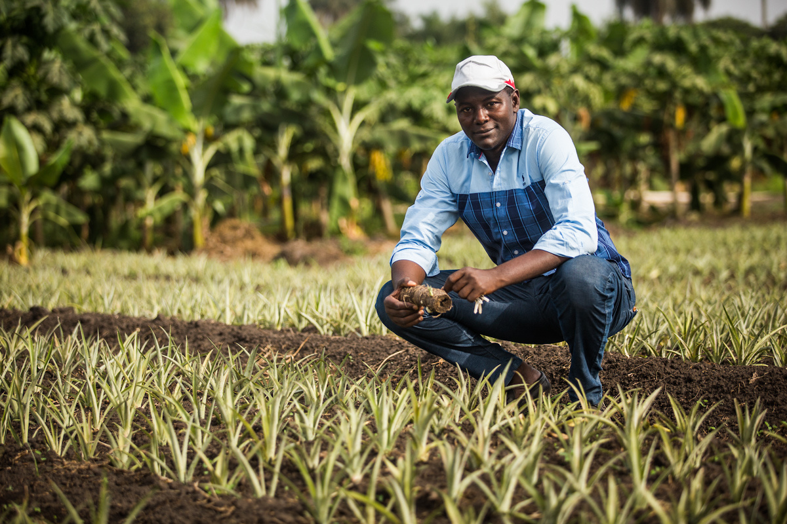
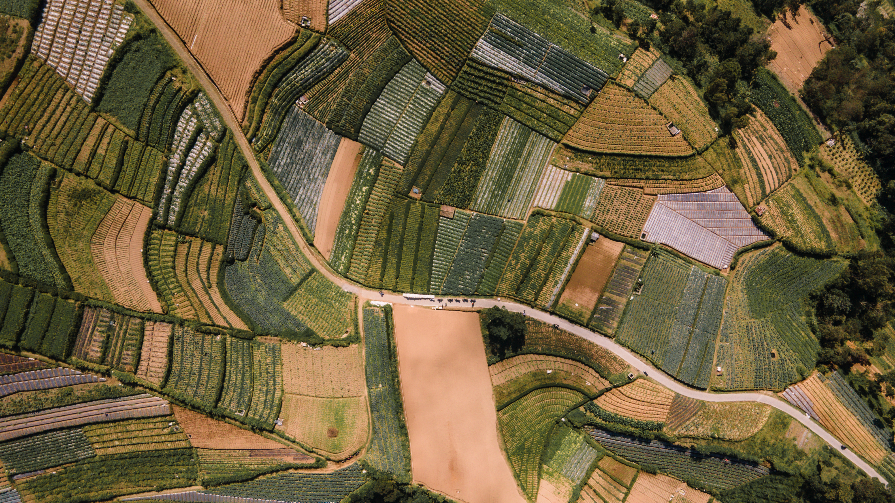
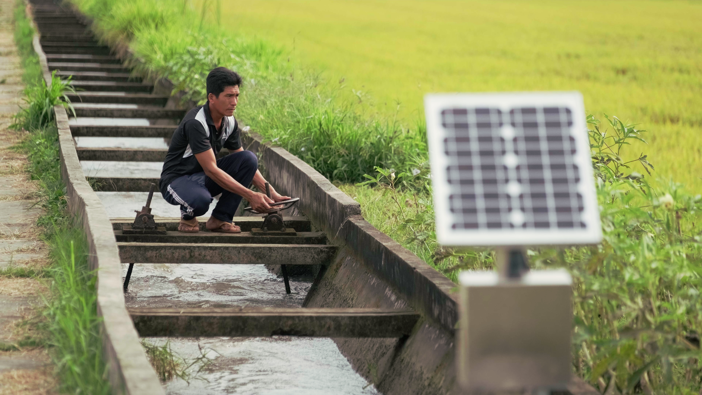
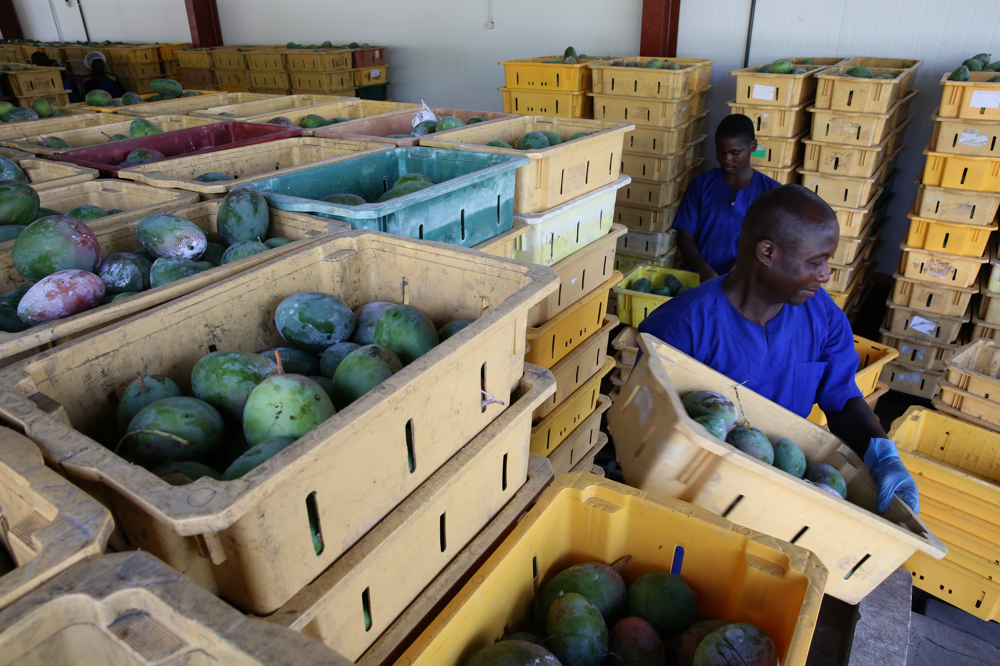

Existing agricultural support
$ billion / year, all forms
$490B
About three-quarters goes to subsidies and commodity-linked payments.
Redirecting even part of this could cover the investment need without
new spending.




Source: Nourish and Flourish, World Bank 2026 - chapter 5 financing figures.
← Back to gallery